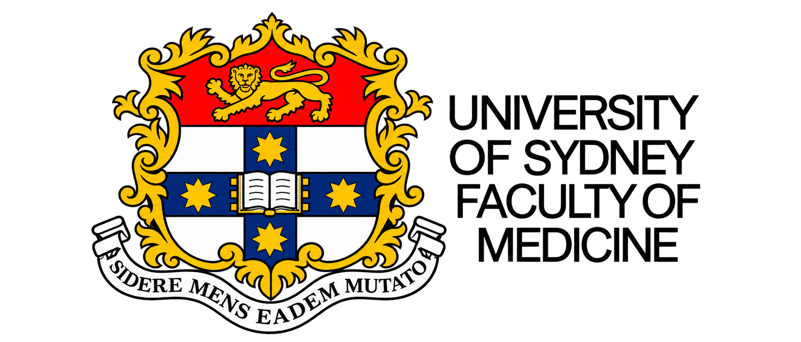
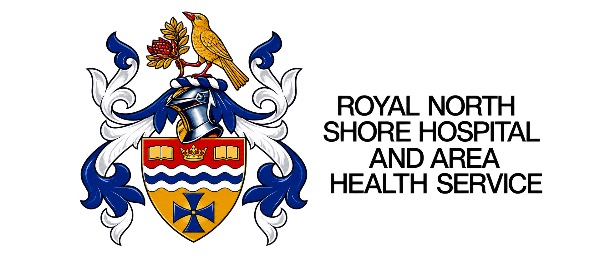

Bruno M
Giuffrè.
M.B.B.S., F.R.A.N.Z.C.R.
Diagnostic Radiologist
PHOTO
Royal North Shore Hospital
Department of Diagnostic Radiology
Level 2, Main Building
St Leonards NSW 2065
- Telephone
- +61 2 9926 4415
- Mobile
- +61 419 814 346
- Facsimile
- +61 2 9926 4097